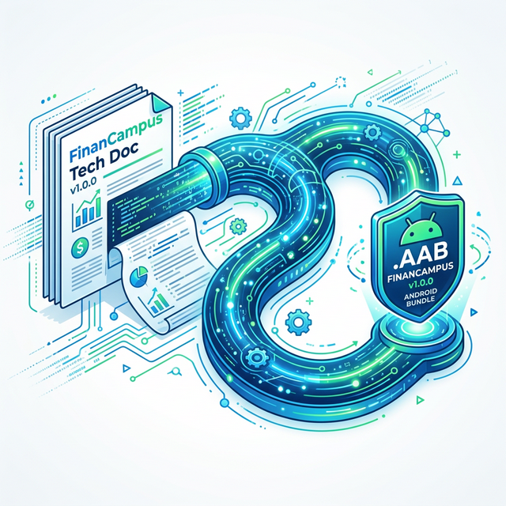

Estudo de Caso 14 — Consolidação e Build de Produção
Objetivo da Semana
Gerar um fechamento técnico na forma de um Documento de Arquitetura que permita à uma pessoa desenvolvedora júnior pegar o projeto hoje e saber o que fazer. Adicionalmente, promover a Build Final (Release) compactada do Aplicativo para versão Produção (AAB/APK v1.0.0).
Passo a Passo da Atividade
Peça a sua IA que atue como Tech Lead de sua Startup, gerando o Sumário para reunir a Visão (Semana 2), Arquitetura de Dados (Semana 4 e 5), Diagrama de Telas (Semana 7) num único e belo portal centralizado.
Exemplo de Prompt: "Como um Tech Lead, ajude a estruturar o índice (sumário) de documentação técnica para o encerramento do meu projeto escolar de aplicativo em FlutterFlow e Firebase..."
Crie este documento online. Insira os gráficos e tabelas feitas das coleções ao longo de todo esse projeto integrador. Adicione uma sessão de "Trabalhos Futuros", destacando onde vocês cortaram arestas ou decidiram transformar funcionalidades não concluídas em tarefas para as próximas versões 1.1 e 2.0.
No FlutterFlow navegue até a nuvem de Build. Ajuste os metadados de Build Number para algo correspondente a v1.0.0 e requisite o processamento e Build na Nuvem compilando o AAB e baixando o arquivo final gerador, bem como provendo a foto dele.
Para concluir as atividades desta semana, reúna todas as informações e artefatos gerados nos passos anteriores e preencha o template oficial de entrega. Faça uma cópia do documento para a sua conta Google e compartilhe-o com o professor.
Acessar Template: Documentação Técnica Oficial - [Nome do App] v1.0
📱 Estudo de Caso: FinanCampus
Veja a documentação técnica e o build final gerado pelo grupo do FinanCampus.

Documentação Técnica Final (Notion — 14 páginas):
- Identificação: FinanCampus v1.0.0, equipe de 4 integrantes, entrega em fevereiro/2026.
- Arquitetura: diagrama FlutterFlow ↔ Firebase SDK ↔ Firestore.
- Banco de dados: estrutura com 4 coleções, listagem de todas as Security Rules.
- Telas e Navegação: mapa de 11 telas com diagrama de fluxo.
- Configuração: passo a passo para um novo dev configurar FlutterFlow e Firebase do zero.
- Limitações: RF08 (PDF) não implementado; orçamento apenas global (não por categoria).
- Trabalhos futuros v2.0: relatório PDF, gráfico de evolução mensal, login social.
Build gerado: AAB v1.0.0 (Version Code: 1), tamanho 14 MB. Testado em 3 dispositivos: Motorola Edge 30, Samsung Galaxy A54 e emulador Android 12. Nenhum crash identificado nos testes.